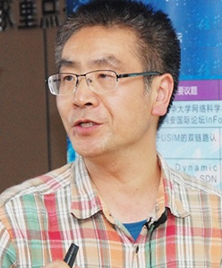

| Kai Chen | |
|---|---|

|
Professor Kai Chen received his Ph.D. degree in the University of Chinese Academy of Science in 2010; then he joined the Chinese Academy of Science in January 2010. He became the Associate Professor in September 2012 and became the full Professor in October 2015. His research interests include software analysis and testing; smartphones and privacy. |
| Hongxin Hu is an Associate Professor and Dean's Faculty Fellow of computer science in the School of Computing at Clemson University. He is a recipient of the U.S. National Science Foundation (NSF) CAREER Award for 2019. His research spans security, privacy, networking, and systems. He has led multiple cross-university, cross-disciplinary projects funded by NSF. His research has also been funded by USDOT, Google, VMware, Amazon, Dell, etc. He has published over 100 refereed technical papers, many of which appeared in top-tier conferences such as CCS, USENIX Security, NDSS, SIGCOMM, INFOCOM, CHI, and CSCW, and top journals such as IEEE TIFS, IEEE TDSC, IEEE/ACM TON, and IEEE TKDE. He is the recipient of the Best Paper Awards from IEEE ICC 2020, ACM SIGCSE 2018, and ACM CODASPY 2014, and the Best Paper Award Honorable Mentions from ACM SACMAT 2016, IEEE ICNP 2015, and ACM SACMAT 2011. His research has won the First Place in ACM SIGCOMM 2018 SRC. His research has also been featured by the IEEE Special Technical Community on Social Networking, and received 50+ press coverage including ACM TechNews, InformationWeek, Slashdot, etc. | Title: Rethinking Security for the Internet of Things |
| Abstract: The Internet of Things (IoT) is a new computing paradigm spanning smart home, wearable devices, smart cities, and intelligent transportation systems. Building security into IoT is critical today. However, many unique features in IoT, including device resource constraints, device/vendor diversity, and cross-device physical interactions often make traditional IT security approaches impractical. To address those challenges, in this talk, I will present three of our recent research efforts. First, I will introduce a lightweight malware infection detector for IoT devices. Second, I will present Poseidon, a system that mitigates volumetric DDoS attacks with programmable switches. Third, I will briefly discuss IoTMon, an IoT device physical interaction control system, which can discover all potential inter-app interaction chains and analyze risk levels of those interaction chains. | |
| Heqing Huang | |
|---|---|
| 黄鹤清 博士现就职于Bytedance AI Lab US，研究方向包括：下一代云安全、APT检测、大数据威胁情报安全、AI安全应用和深度学习对抗样本等。2016年毕业于宾夕法尼亚州立大学，是全球计算机安全年会创办35年来首位最佳优秀博士论文奖华人得主。先后就职于IBM T.J. Watson、Palo Alto Networks、FireEye Inc和Samsung Research American等。在信息安全顶级会议发表多篇学术论文，包括ACM CCS、USENIX Security、IEEE DSN、ACSAC等。所获荣誉包括：IBM发明家奖、IBM经理人推荐奖、火眼骇客松冠军、宾州州立大学杰出研究生助理奖（每年三名）、思科创新大赛一等奖、ACSAC最佳优秀博士生论文奖（企业安全）等。 | |
| Title: Informer: Irregular Traffic Detection for Containerized Microservices RPC in the Real World | |
| Abstract: Containerized microservices have been widely deployed in industry. Meanwhile, security issues also arise. Many security enhancement mechanisms for containerized microservices require predefined rules and policies. However, it is challenging when it comes to thousands of microservices and a massive amount of real-time unstructured data. Hence, automatic policy generation becomes indispensable. In this paper, we focus on the automatic solution for the security problem: irregular traffic detection for RPCs. We propose Informer, which is a two-phase machine learning framework to track the traffic of each RPC and report anomalous points automatically. In evaluations, we applied Informer to a dataset containing more than 7 billion lines of raw RPC logs sampled from an large Kubernetes system for two weeks. | |
| Fengjun Li | |
|---|---|

|
Dr. Fengjun Li is an Associate Professor in the Department of Electrical Engineering and Computer Science at the University of Kansas. She received B.E. degree (with honor) from the University of Science and Technology of China, M.Phil. from the Chinese University of Hong Kong and Ph.D. from the Pennsylvania State University. Her research interests lie in a broad area of security and privacy for cyber-physical systems, distributed information systems, communication networks and social networks. She has published over 40 refereed papers. Many of them are in top computer security and networking journals and conferences. Her research has been supported by funding agencies such as NSF and NSA. She has served on NSF panels multiple times and served as a steering committee chair, general chair, organizing committee member, TPC member, session chair, and reviewer for several international conferences and workshops. She is the recipient of the Kansas NSF EPSCoR First Award in 2014, the best paper award of SecureComm 2015, and the 2016 Miller Scholar Award of the University of Kansas. |
| Jingqiang Lin | |
|---|---|
 |
Dr. Jingqiang Lin is a professor in Institute of information engineering, Chinese Academy of Sciences, deputy director of the State Key Laboratory of Information Security. He received his bachelor's degree in University of Science & Technology China in 2001 and received his master's and a Ph.D. degree in 2004 and 2009 respectively in Graduate University of Chinese Academy of Sciences. He published many papers in the top-ranking international conferences and journals, such as IEEE S&P, NDSS, AsiaCrypt, ESORICS, CHES, FSE, IPDPS, SRDS, ACSAC, RAID, IEEE TDSC, IEEE TKDE, IEEE TIFS, etc., including ACSAC 2017 Outstanding Paper and ISC 2014 Best Student Paper. He took charge of or participated in many foundation projects, such as NSFC, the national 973 Plan, the National 863 plan, the national science and technology support plan. Besides, he won the Zhu-Li-Yue-Hua Excellent Faculty award by the Chinese Academy of Sciences in 2017, the second place prize for cipher innovation of the Chinese cryptography society in 2016, the first place prize in cipher science and technology progress in 2015, the second place prize of national scientific and technological progress in 2005, and the second place prize of science and technology in Beijing in 2004. |
| Yubin Xia | - | |
|---|---|---|
| 夏虞斌，上海交通大学副教授，博士生导师。中国计算机学会CCF高级会员，ACM会员，IEEE会员。研究领域为操作系统与体系结构，研究方向为系统虚拟化、系统安全、软硬件协同。获2018年教育部技术发明一等奖，2019年上海市技术发明一等奖。在ISCA、ASPLOS、HPCA、EuroSys、USENIX ATC、FAST、USENIX Security、CCS等国际会议发表多篇论文，获CCF A类会议HPCA 2014的“最佳论文提名奖”，CCF B类会议VEE 2019“最佳论文奖”，担任一系列著名国际会议的程序委员会委员，包括OSDI、MobiSys、EuroSys等。领导团队开发的安全操作系统T6获2015年第十四届“挑战杯”特等奖、2019年第五届中国“互联网+”大学生创新创业大赛全国银奖，基于RISC-V平台研发的Enclave系统“蓬莱”已开源。 | ||
| Title: 可信执行环境的发展与机遇-2020 | ||
| Abstract: 本次报告首先介绍可信执行环境作为信息产业基础设施，在云端、移动端等场景下对数据保护的基础性作用，然后介绍底层相关软硬件的发展现状，包括RISC-V平台的多种Enclave设计，最后介绍可信执行环境面临的挑战与发展的机遇。 | ||
| Jun Xu | |
|---|---|
| Jun Xu is an Assistant Professor in the Department of Computer Science at Stevens Institute of Technology. He received his PhD from Penn State University, with a focus on cyber security. His research spans the areas of software security, system security, and binary analysis. He has developed new methodologies and techniques for vulnerability finding, analysis, exploitation, and mitigation. His research has led to the discovery of hundreds of previously unknown security defects. Jun is a recipient of ACM CCS Outstanding Paper Award, Penn State Alumni Association Dissertation Award, and RSA Security Scholarship. | |
| Shoumeng Yan | |
|---|---|
| Shoumeng Yan , Director and Senior Staff Engineer in Confidential Computing, Ant Financial. He leads the confidential computiong direction of the company, focusing on building confidential computing frameworks and hw/sw infrastructure for critical financial business. Before joining Ant Financial, he had worked at Intel since 2006 after he got his PH.D in computer science from Northwestern Polytechnical University. His interests span areas like runtime, OS, virtualization, compiler, language, and all other system software. He has published papers at top conferences like ASPLOS, PLDI, FSE, HotPar, HotMobile etc. He holds about 20 U.S patents. | |
| Title: Occlum: Secure and Efficient Multitasking Inside a Single Enclave of Intel SGX | |
| Abstract: Intel Software Guard Extensions (SGX) enables user-level code to create private memory regions called enclaves, whose code and data are protected by the CPU from software and hardware attacks outside the enclaves. Recent work introduces library operating systems (LibOSes) to SGX so that legacy applications can run inside enclaves with few or even no mod- ifications. As virtually any non-trivial application demands multiple processes, it is essential for LibOSes to support mul- titasking. However, none of the existing SGX LibOSes support multitasking both securely and efficiently. This topic presents Occlum, a system that enables secure and efficient multitasking on SGX. We implement the LibOS processes as SFI-Isolated Processes (SIPs). SFI is a software instrumentation technique for sandboxing untrusted modules (called domains). We design a novel SFI scheme named MPX- based, Multi-Domain SFI (MMDSFI) and leverage MMDSFI to enforce the isolation of SIPs. We also design an indepen- dent verifier to ensure the security guarantees of MMDSFI. With SIPs safely sharing the single address space of an en- clave, the LibOS can implement multitasking efficiently. The Occlum LibOS outperforms the state-of-the-art SGX LibOS on multitasking-heavy workloads by up to 6, 600× on micro- benchmarks and up to 500× on application benchmarks. | |
| Qiang Zeng | - | |
|---|---|---|
| Qiang Zeng，is an Assistant Professor at University of South Carolina. He received his bachelor’s and Master’s degrees from Beihang University, and his Ph.D. degree from the Pennsylvania State University in 2014. His research interests are software and system security. | ||
| Title: Cross-App Interference Threats in Smart Homes: Categorization, Detection and Handling | ||
| Abstract: Internet of Things platforms prosper home automation applications (apps). Prior research concerns intra-appsecurity. Our work reveals that automation apps, even secured individually, still cause a family of threats when they interplay, termed as Cross-App Interference (CAI) threats. We systematically categorize such threats and encode them using satisfiability modulo theories (SMT). We present HOMEGUARD, a system for detecting and handling CAI threats in real deployments. A symbolic executor is built to extract rule semantics, and instrumentation is utilized to capture configuration during app installation. Rules and configuration are checked against SMT models, the solutions of which indicate the existence of corre-sponding CAI threats. We further combine app functionalities, device attributes and CAI types to label the risk level of CAI instances. In our evaluation, HOMEGUARD discovers 663 CAI instances from 146 SmartThings market apps, imposing minor latency upon app installation and no runtime overhead. | ||
| Chao Zhang | |
|---|---|

|
张超，博士， 清华大学副教授（博导），蓝莲花战队教练。获得清华大学“学术新人奖”、青年千人、中国区35岁以下科技创新35人（MIT TR35 China）、求是杰出青年学者、中国科协"青年人才托举工程"等奖励和荣誉。主要研究软件和系统安全，尤其是智能攻防方向，在国际四大安全会议发表论文十余篇。在自动攻防研究方面，提出的漏洞挖掘方案发现300多个未知漏洞，获得腾讯CSS安全探索论坛专业奖；防御方案获得微软BlueHat竞赛特别提名奖；漏洞利用方案获得腾讯CSS安全探索论坛突破奖；带队研发了自动攻防系统，获得了美国国防部DARPA CGC机器自动攻防竞赛初赛防御第一、决赛攻击第二。在攻防实践方面，获得Defcon CTF攻防夺旗赛2016年团队第二名等国内历史最优成绩。 |
| Title: 数据流敏感的漏洞挖掘方法 | |
| Abstract: 模糊测试近年来成为安全研究人员的必备的漏洞挖掘工具，是近年来漏洞披露数量爆发的重要推手。然而，模糊测试工具在种子生成、选择、变异、测试、评估、反馈等多个环节都存在一定的盲目性和随机性，其漏洞挖掘效率存在较大提升空间。我们通过分析经典模糊测试工具AFL的实现原理，找到了若干个制约其效率的瓶颈所在，包括数据流不敏感等，并针对性地提出了改进方案GreyOne（USENIX Sec'20）。本次报告将与大家探讨这一方案。 | |
| Yuqing Zhang | |
|---|---|
|  | Dr. Yuqing Zhang is a Professor of Computer Sciences and the Director of the National Computer Network Intrusion Protection Center at University of CAS. His research interests include network and system security, cryptography, and networking. He has published more than 100 research papers. |
| Title: Detecting API Unauthorized Access Vulnerabilities of IoT Platform | |
| Abstract: The Internet of Things enables interaction between IoT devices and users through the cloud. The cloud provides services such as account monitoring, device management, and device control. As the center of the IoT platform, the cloud provides services to IoT devices and IoT applications through API. Therefore, the permission verification of the API is essential. However, we found that some APIs are unverified, which allows unauthorized users to access cloud resources or control devices that threaten the security of devices and cloud. To check for unauthorized access to the API, we developed a tool to check the permission verification of the cloud API. Through observation, we found there is a large amount of interactive information between IoT Application and cloud, which include the APIs and related parameters, so we can extract them by analyzing the logic of the IoT Application, and use this for mutating API test cases. Through these test cases, we can effectively check the permissions of the API. In our research, we extracted a total of 5 platform APIs. Among them, the proportion of APIs without permission verification reached 13.3%. Our research shows that attackers can use APIs without permission verification to obtain smart home devices' privacy or control of devices. | |
| Bin Zhao | |
|---|---|
| Dr. Bin Zhao graduated from the Cyberspace Security Laboratory of Pennsylvania State University in the spring of 2015. His main research interests are network security, software security, black production research, mobile data leakage, and network protocol analysis. After graduation, he worked in Palo Alto Networks, the world leader in corporate security, working with the core content of the firewall, AppID and IPS at the begining. As a Senior Staff Engineer and Tech Leader, he led the development of SSL-based client-free VPN, which is widely used in major enterprises and government departments. Dr. Zhao joined the Jingdong Silicon Valley Research Center as Chief Security Architect in June 2017. Mainly responsible for black production information mining, cattle behavior detection, mobile App data and financial information leak prevention. Dr. Zhao's research and findings are published in several top security conferences and journals, such as CCS, RAID, DSN, ACSAC, DefCon, etc. | |
| Title: Bot Detection in Large Enterprise Environment | |
| Abstract: Bot traffic has raised serious concerns among website operators, because they usually consume considerable resources at web servers, resulting in high workloads and longer response time, while not bringing in any profit. This is even worse under the context of large e-commerce marketplaces. Many of the bot traffic are then used for other fraudulent activities. A very high detection accuracy is required in large e-commerce marketplaces. A combined approach is discussed in this talk: behavior analysis, running environment check, HTTP traffic examination, device fingerprinting, blacklist, rule-based engine, and machine learning techniques, etc. We will also discuss countermeasures against bot traffic in this talk. | |
| Yajin Zhou | |
|---|---|
| 周亚金, 浙江大学网络空间安全研究中心/计算机学院百人计划研究员（博导）。周亚金于2015在美国北卡州立大学获得博士学位，随后担任奇虎360高级安全研究员，从事移动安全产品研发工作。2018年加入浙江大学。他发表了40多篇学术论文，包括安全四大会议10篇，四次获得最佳论文奖，包括EURO S&P 2019（国内首次）。他的研究具有较大的影响，总引用数超6500次，h-index 17。两篇文章入选自1981年以来全球引用最多的安全论文前100篇列表。入选AMiner 2009到2019年全球安全和隐私领域最有影响力的100位研究者列表（排名48）。作为指导老师之一，参加美国国立卫生部主办的2019 iDash全球基因安全计算SGX赛道，开发的基于硬件的隐私机器学习系统性能比第二名领先数十倍，以绝对优势获得全球第一名（国内首次）。他受邀担任过个顶级安全学术会议的程序委员会委员，包括CCS, IEEE S&P以及EURO S&P。他的研究工作得到了华尔街日报、中央电视台等媒体报道和谷歌、facebook、三星等企业的致谢。 他具有丰富的企业界和学术界融合的工作经历。在奇虎360期间，担任360移动安全产品加固保的技术负责人，开发日活超过千万的移动安全产品，因为产品的影响力，团队获得360总裁特别奖。加入浙大后，同阿里巴巴在安全计算方面展开合作，作为通讯作者发表了国内企业作为第一作者的首篇CCS（安全四大会议之一）论文，研发的安全大数据分布式处理系统在阿里云栖大会发布（2019年）。 他目前从事系统安全方面的研究，重点关注软硬件协同的系统安全增强、基于安全硬件的数据保护技术以及系统化的软件/固件脆弱性发现。他同时也关注一些新兴的安全威胁，比如智能合约安全性。他的研究得到了国家自然科学基金、阿里巴巴以及华为的资助。 | |
| Title: An Empirical Study on ARM Disassembly Tools | |
| Abstract: With the increasing popularity of embedded devices, ARM is becoming the popular architecture for them. In the meanwhile, there is a pressing need to perform security assessments for these devices. Due to different types of peripherals, it is challenging to dynamically run the firmware of these devices in an emulated environment. Therefore, the static analysis is still commonly used. Existing work usually leverages off-the-shelf tools to disassemble stripped ARM binaries and (implicitly) assume that reliable disassembling binaries and function recognition are solved problems. However, whether this assumption really holds is unknown. We conduct the first comprehensive study on ARM disassembly tools. Specifically, we build 1, 896 ARM binaries (including 248 obfuscated ones) with different compilers, compiling options, and obfuscation methods. We then evaluate them using eight state-of-the-art ARM disassembly tools (including both commercial and noncommercial ones) on their capabilities to locate instructions and function boundaries. These two are fundamental ones, which are leveraged to build other primitives. Our work reveals some observations that have not been systematically summarized and/or confirmed. For instance, we find that the existence of both ARM and Thumb instruction sets, and the reuse of the BL instruction for both function calls and branches bring serious challenges to disassembly tools. Our evaluation sheds light on the limitations of state-of-the-art disassembly tools and points out potential directions for improvement. To engage the community, we release the data set, and the related scripts at https://github.com/valour01/arm_disasssembler_study | |